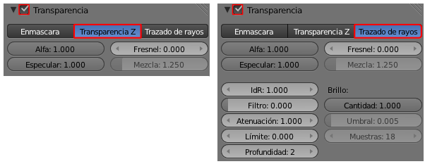
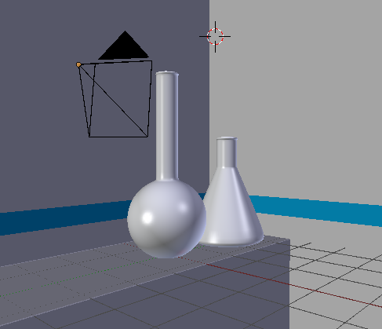
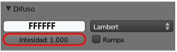
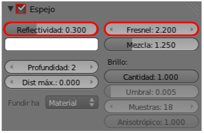
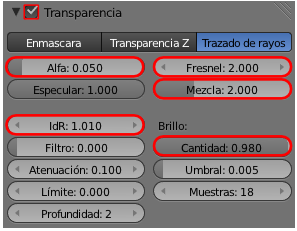
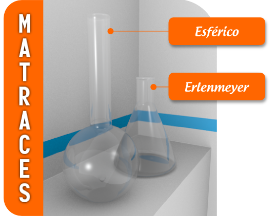

Transparencias
Algunos materiales, tanto naturales como artificiales, permiten que la luz pase a través de ellos. Todo lo relativo a esta característica se encuentra en el panel Materiales  en la botonera Transparencia. Ocurre como en la propiedad Espejo en la que se consumen muchos recursos del ordenador aumentando los tiempos de render. La casilla de activación permite configurar los parámetros de nuestra transparencia y activarla o desactivarla a nuestro antojo. Blender calcula la transparecia con dos tecnologías distintas:
en la botonera Transparencia. Ocurre como en la propiedad Espejo en la que se consumen muchos recursos del ordenador aumentando los tiempos de render. La casilla de activación permite configurar los parámetros de nuestra transparencia y activarla o desactivarla a nuestro antojo. Blender calcula la transparecia con dos tecnologías distintas:
- Transparencia Z. Consume menos recursos pero no permite efectos como la refracción.
- Trazado de rayos. Es la transparencia avanzada en la que se consumen más recursos a cambio de disponer de parámetros para resultados más interesantes.

Cuando se trata de cristales, la propiedad Transparencia va acompañada de la de Espejo por lo que el objeto no sólo deja pasar la luz sino que también la refleja en su superficie debido a su carácter pulido.
Partimos del modelado de unos matraces como estos. La pared de fondo presenta una banda azulada que, además de darle un matiz decorativo, sirve para constarar asuntos como el Índice de Refracción (IdR).
La escena está iluminada con la habitual iluminación básica pero en este caso le hemos añadido una lámpara más de tipo Área para originar más brillos sobre las superficies de cristal.
Comenzamos con la botonera Difuso.
- Color blanco puro: FFFFFF.
- Intensidad: 1.000. Al máximo.

Nos vamos a la botonera Espejo a activar la propiedad y determinar:
- Reflectividad: 0.3. Como va a ser muy transparente le otorgamos poco poder de reflexión.
- Fresnel: 3.000. Para evitar reflejos en las caras que miran al espectador.
- Mezcla: 2.000. Para calibrar el nivel de influencia del efecto Fresnel.
- Fundir a: Material. Para no preocuparnos del color del cielo, mejor que se desvanezca hacia el propio color Difuso del material.

Y llega el momento de activar la propiedad de la Transparencia en la botonera del mismo nombre y editar los siguientes parámetros.
- Alfa: 0.300. Los objetos serán transparentes pero no del todo.
- Fresnel: 2.000 y Mezcla: 2.000 tienen la misma finalidad que en Espejo pero en esta ocasión aplicada a la transparencia.
- Brillo/Cantidad: 0.980. Es para que los objetos que se ven a través de la transparencia pierdan algo de definición.
- IdR: 1.010. Es el Índice de Refracción. El valor 1.000 significa que los objetos que aparecen detrás no se distorsionan. Nosotros queremos que lo hagan muy poco. IoR es muy agresivo por lo que subimos ligeramente.

Y con estas ediciones está lista la escena para el render, con el que hemos elaborado este material didáctico.
Un último consejo
En condiciones normales el objeto que recoge la sombra no está preparado para recibir ese tipo de información. Es necesario activar en ese Material  la opción Recibir transparencias en la botonera Sombra.
la opción Recibir transparencias en la botonera Sombra.